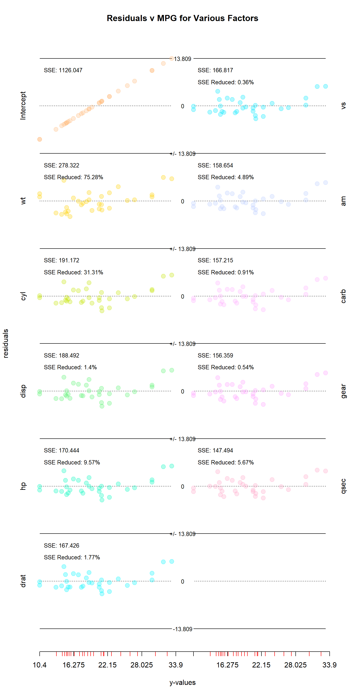
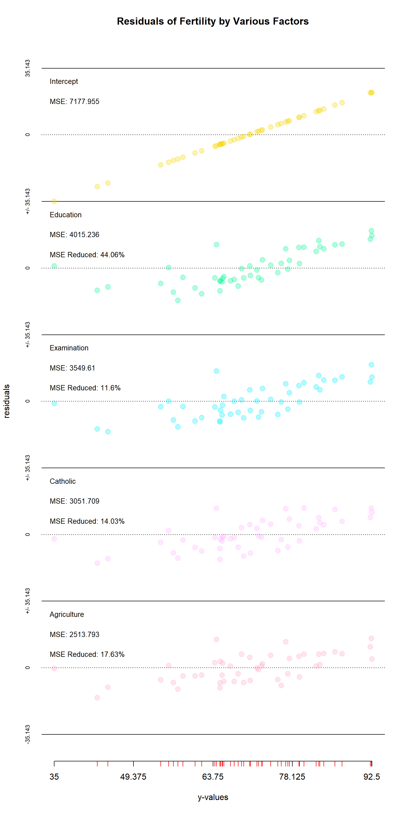

demo.RmdThis package is designed to show how adding successive predictors to a regression modifies the residuals and mean-squared error. It is not meant as a replacement for the standard lm(y ~ x1, x2, x3) function, but instead a supplement. This package helps one show how regressions work, and how each successive variable in the design matrix helps explain the response vector. In this spirit, the focus is on how the residuals change with each successive variable added to a regression.
Let us take one of the most commonly used built-in datasets in R: mtcars. First, we’ll asign mpg to our response vector y, and the remaining columns to a design matrix x. Then, we’ll call our step_regression function, and plug the results into res_plotter_double() with addIntercept = TRUE.
data(mtcars)
head(mtcars)
#> mpg cyl disp hp drat wt qsec vs am gear carb
#> Mazda RX4 21.0 6 160 110 3.90 2.620 16.46 0 1 4 4
#> Mazda RX4 Wag 21.0 6 160 110 3.90 2.875 17.02 0 1 4 4
#> Datsun 710 22.8 4 108 93 3.85 2.320 18.61 1 1 4 1
#> Hornet 4 Drive 21.4 6 258 110 3.08 3.215 19.44 1 0 3 1
#> Hornet Sportabout 18.7 8 360 175 3.15 3.440 17.02 0 0 3 2
#> Valiant 18.1 6 225 105 2.76 3.460 20.22 1 0 3 1By default, the columns of the residuals matrix are ordered so that the intercept is in the first column, and the most significant variables come first. In this case, significance is determined by which columns give the lowest SSE in predicting the response vector when alone. This does not, however, mean that they will be significant when applied alongside other variables.
y<-mtcars$mpg
x<-mtcars[,-1]
res<-StepRegression::step_regression(x,y,addIntercept=TRUE)
head(as.data.frame(res))
#> Intercept wt cyl disp hp drat vs
#> 1 0.909375 -2.2826106 -1.2791447 -1.0682107 -1.56804806 -1.7882906 -1.5716758
#> 2 0.909375 -0.9197704 -0.4654468 -0.1411131 -0.58530266 -0.8516024 -0.6222790
#> 3 2.709375 -2.0859521 -3.4520262 -3.5402088 -3.25685052 -3.0233543 -3.0413038
#> 4 1.309375 1.2973499 1.0194838 0.7626704 -0.01170091 0.3671066 0.1549594
#> 5 -1.390625 -0.2001440 2.0530424 1.6883465 0.89393888 0.9425997 0.9342947
#> 6 -1.990625 -0.6932545 -1.4987281 -1.3999822 -2.08741154 -1.4405269 -1.5998659
#> am carb gear qsec
#> 1 -2.021409597 -1.7271857 -1.5447253 -1.5995058
#> 2 -1.193854946 -1.0173239 -0.8724935 -1.1118861
#> 3 -3.659614260 -3.9539695 -3.9116067 -3.4506441
#> 4 -0.008373284 0.1261956 0.1460422 0.1625955
#> 5 1.256741572 1.2990576 1.2797136 1.0065660
#> 6 -2.045050275 -2.0918728 -2.1471796 -2.2830390There are two built-in plotting functions for this package: res_plotter() and res_plotter_double(). They both create residuals vs values sub-plots for each variable, with each corner containing the SSE after each variable is added to the regression, and the percent by which each variable reduced the SSE. The only difference between the two functions is that res_plotter_double has two columns of plots.

This function has two main uses. First, it helps identify which variables to include in a multivariate regression. Looking at the mtcars visual, it is interesting to note that several variables that seemed important when examined in isolation are found to do little to improve the SSE when others are included as well. The “disp” (displacement), “drat” (rear axle ratio), “vs” (v-shape vs inline), “carb” (number of carburetors) and “gear” all turned out to be less important than they initially seemed, while the opposite could be said for “hp” (horsepower), “am” (manual vs automatic), and “qsec” (quarter mile time).
The second use is helping to understand how regressions work. Rather than regress all of the variables together, step_regression regresses each out of y and the remaining x variables. Each step is essentially applying regression to the residuals leftover.
data(swiss)
head(swiss)
#> Fertility Agriculture Examination Education Catholic
#> Courtelary 80.2 17.0 15 12 9.96
#> Delemont 83.1 45.1 6 9 84.84
#> Franches-Mnt 92.5 39.7 5 5 93.40
#> Moutier 85.8 36.5 12 7 33.77
#> Neuveville 76.9 43.5 17 15 5.16
#> Porrentruy 76.1 35.3 9 7 90.57
#> Infant.Mortality
#> Courtelary 22.2
#> Delemont 22.2
#> Franches-Mnt 20.2
#> Moutier 20.3
#> Neuveville 20.6
#> Porrentruy 26.6Here is a second example, this time using the Swiss dataset with the res_plotter function. Here, we are excluding “Infant.Mortality” as it does not seem an appropriate predictor of fertility. The information conveyed by res_plotter() is essentially the same as res_plotter_double(), albeit with just one column. One can once again see that the importance of variables changes when others are included–in this case the “examination” and “agriculture” have switches places of importance.
y<-swiss$Fertility
x<-swiss[,c(-1,-6)]
res<-step_regression(x,y,addIntercept=TRUE)
res_plotter(res,y,main="Residuals of Fertility by Various Factors")
As mentiond above, this package works by regressing one variable out at a time from the response vector and all other variables in the design matrix. For each variable except the last, the function is essentially doing two regressions: the first on y, and the second on the other x variables. Then, the residuals for both y and the remaining x variables are calculated, and the function is then repeated, regressing one variable out at a time until none remain.
Below I’ve included a proof, checking each step with the lm() function. To avoid too much repetition, several variables will be regressed at once. For the first step, I’ve performed a regression on all of the variables in mtcars–one using linear algebra and the second using lm(). The second does two: the y-intercept and “cyl” column. Notice that while the coefficients match those for the lm() function, neither of these match the first multivariate regression performed. While doing a regression in steps like this can be useful for examining the work each variable is doing to explain y, getting correct coefficients for all of the variables would require doing all of the variables at once.
In each step though, whether regressing out 2, 6, 1, or any number of variables, the coefficients are the same (with room for floating point errors) as when one uses the lm() function to do the entire regression at once. However, results will vary between two different uses of stepRegression if one regresses the variables in different orders or different groups. A stepwise regression is more a tool for examining residuals than coefficients.
data(mtcars)
y <- mtcars$mpg
x <- as.matrix(cbind(1,mtcars[,-1]))
colnames(x)[1]<-"Intercept"
print("Linear Algebra Result")
#> [1] "Linear Algebra Result"
print(t(solve(t(x) %*% x) %*% t(x) %*% y))
#> Intercept cyl disp hp drat wt qsec
#> [1,] 12.30337 -0.1114405 0.01333524 -0.02148212 0.787111 -3.715304 0.8210407
#> vs am gear carb
#> [1,] 0.3177628 2.520227 0.655413 -0.1994193
x <- x[,-1] #removing the intercept variable, as lm will add its own
print('')
#> [1] ""
print("Builtin lm Function Result")
#> [1] "Builtin lm Function Result"
print(lm (y ~ x)$coefficients)
#> (Intercept) xcyl xdisp xhp xdrat xwt
#> 12.30337416 -0.11144048 0.01333524 -0.02148212 0.78711097 -3.71530393
#> xqsec xvs xam xgear xcarb
#> 0.82104075 0.31776281 2.52022689 0.65541302 -0.19941925
x <- cbind(c(1),x); colnames(x)[1] <- "Intercept"solveY <- solve(t(x[,1:2]) %*% x[,1:2]) %*% t(x[,1:2]) %*% y
print("Linear Algebra Result")
#> [1] "Linear Algebra Result"
t(solveY)
#> Intercept cyl
#> [1,] 37.88458 -2.87579
print("")
#> [1] ""
print("Builtin lm Function Result")
#> [1] "Builtin lm Function Result"
xTemp <- x[,2]
print(lm(y ~ xTemp)$coefficients)
#> (Intercept) xTemp
#> 37.88458 -2.87579solveX <- solve(t(x[,1:2]) %*% x[,1:2]) %*% t(x[,1:2]) %*% x[,3:ncol(x)]
print("Linear Algebra Result")
#> [1] "Linear Algebra Result"
print(solveX)
#> disp hp drat wt qsec vs
#> Intercept -156.60898 -51.05436 4.8931606 0.5646195 21.5091530 1.8533502
#> cyl 62.59893 31.95828 -0.2095512 0.4287080 -0.5915803 -0.2288243
#> am gear carb
#> Intercept 1.3097345 4.9469027 -0.1365360
#> cyl -0.1460177 -0.2035398 0.4766119
print('')
#> [1] ""
print("Checking with builtin regression function")
#> [1] "Checking with builtin regression function"
print(lm (x[,3:ncol(x)] ~ x[,2])$coefficients)
#> disp hp drat wt qsec vs
#> (Intercept) -156.60898 -51.05436 4.8931606 0.5646195 21.5091530 1.8533502
#> x[, 2] 62.59893 31.95828 -0.2095512 0.4287080 -0.5915803 -0.2288243
#> am gear carb
#> (Intercept) 1.3097345 4.9469027 -0.1365360
#> x[, 2] -0.1460177 -0.2035398 0.4766119solveY <- solve(t(xError[,1:2]) %*% xError[,1:2]) %*% t(xError[,1:2]) %*% yError
solveX <- solve(t(xError[,1:2]) %*% xError[,1:2]) %*% t(xError[,1:2]) %*% xError[,3:ncol(xError)]
print("Linear Algebra Result")
#> [1] "Linear Algebra Result"
print(t(solveY))
#> disp hp
#> [1,] -0.01883809 -0.01467933
x0 <- x[,2:4]
print("")
#> [1] ""
print("Builtin lm Function Result")
#> [1] "Builtin lm Function Result"
print(lm(y ~ x0)$coefficients[3:4])
#> x0disp x0hp
#> -0.01883809 -0.01467933yError <- yError - xError[,1:2] %*% solveY
xError <- xError[,3:ncol(xError)] - xError[,1:2] %*% solveXsolveY <- solve(t(xError[,1:6]) %*% xError[,1:6]) %*% t(xError[,1:6]) %*% yError
solveX <- solve(t(xError[,1:6]) %*% xError[,1:6]) %*% t(xError[,1:6]) %*% xError[,7:ncol(xError)]
print("Linear Algebra Result")
#> [1] "Linear Algebra Result"
print(t(solveY))
#> drat wt qsec vs am gear
#> [1,] 0.7059008 -4.032142 0.8682852 0.3647043 2.550928 0.5029362
x0 <- x[,2:10]
print("")
#> [1] ""
print("Builtin lm Function Result")
#> [1] "Builtin lm Function Result"
print(lm(y ~ x0)$coefficients[5:10])
#> x0drat x0wt x0qsec x0vs x0am x0gear
#> 0.7059008 -4.0321421 0.8682852 0.3647043 2.5509285 0.5029362